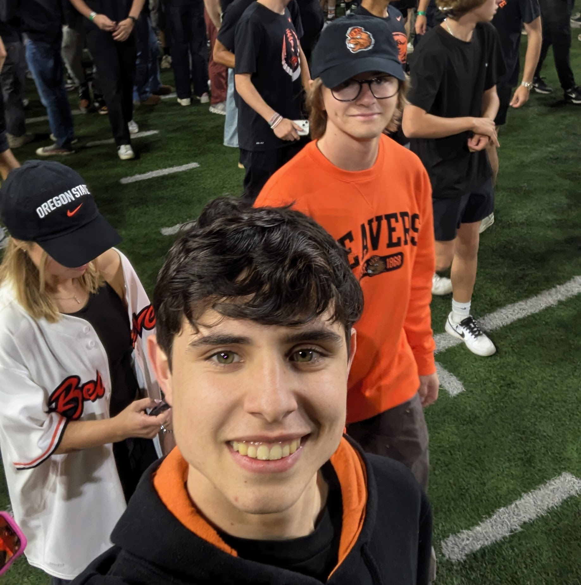

I haven't really dabbled much in web development. The closest I've gotten to web development was back in high school, when I worked on a react-native mobile app for my school's robotics team. I am not certain, but I imagine react web development is somewhat similiar to react-native.
I want to learn how to make good, cohessive web pages. I want to understand javascript in webpages, and how server and client code interracts.
I have signed up for this course's campuswire forum.
It's a lot of pressure to come up with the MOST interesting fact about me. So just a regular fact is that I am from San Diego, California. I ended up in Corvallis because I got rejected from a bunch of the California schools I applied to. Turns out CS is a very impacted major in California. After not getting into my top California schools, I wanted to go to an out of state school that wasn't too far, so a border state. Arizona is hell on Earth, and Nevada is only cool after you turn 21, so Oregon it was. And between the two, Oregon State has the better CS program than UO.

Me and my friend Aidan at the OSU vs CSU game